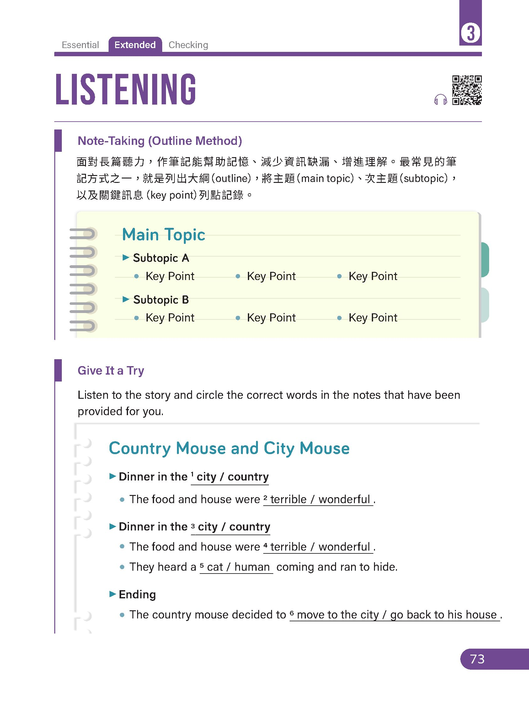
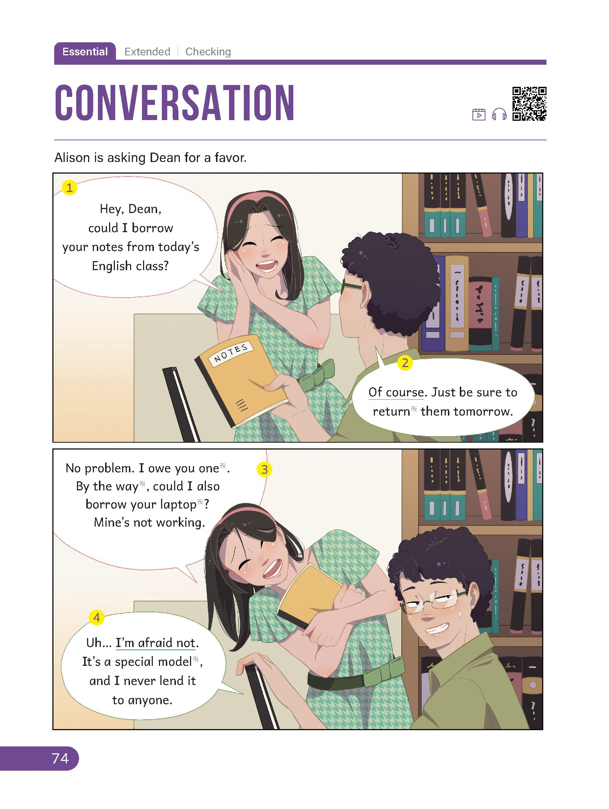
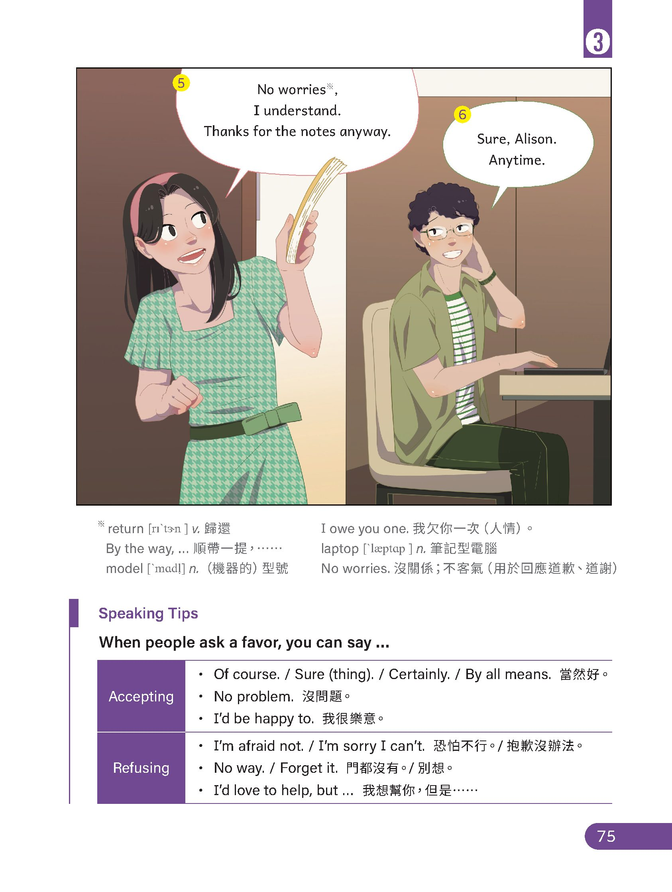
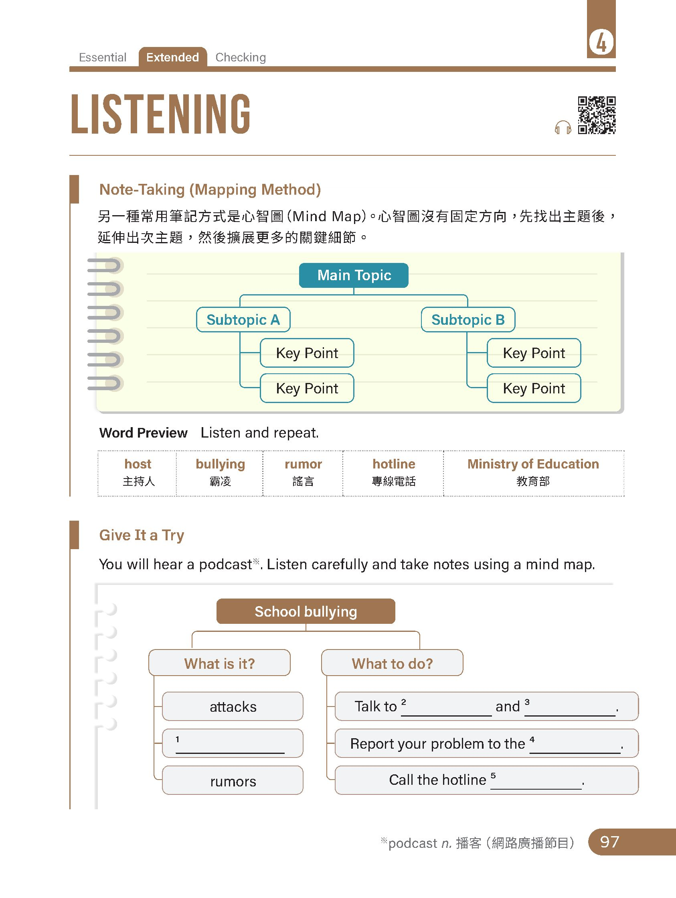
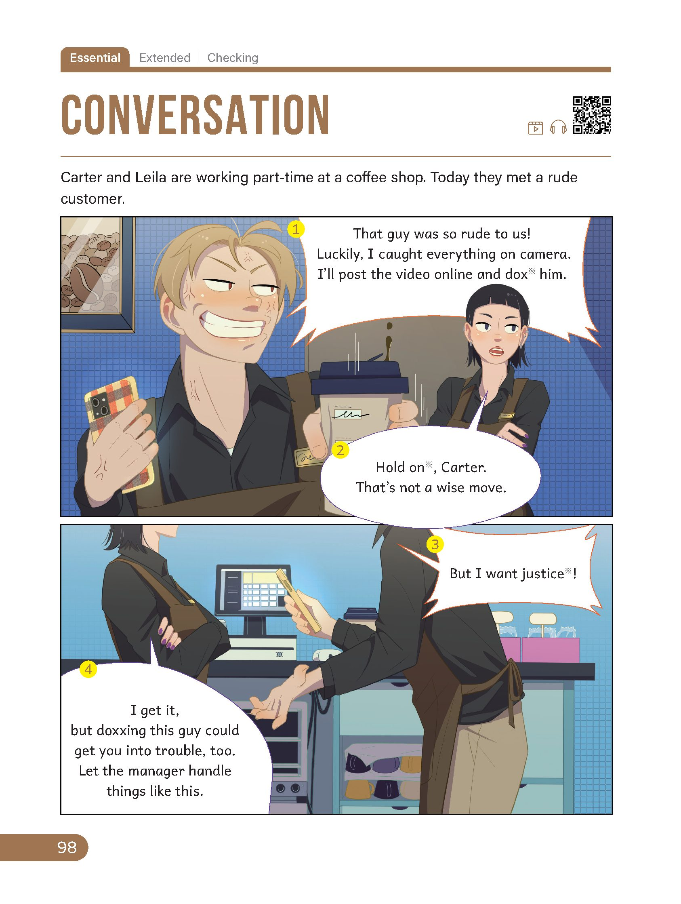
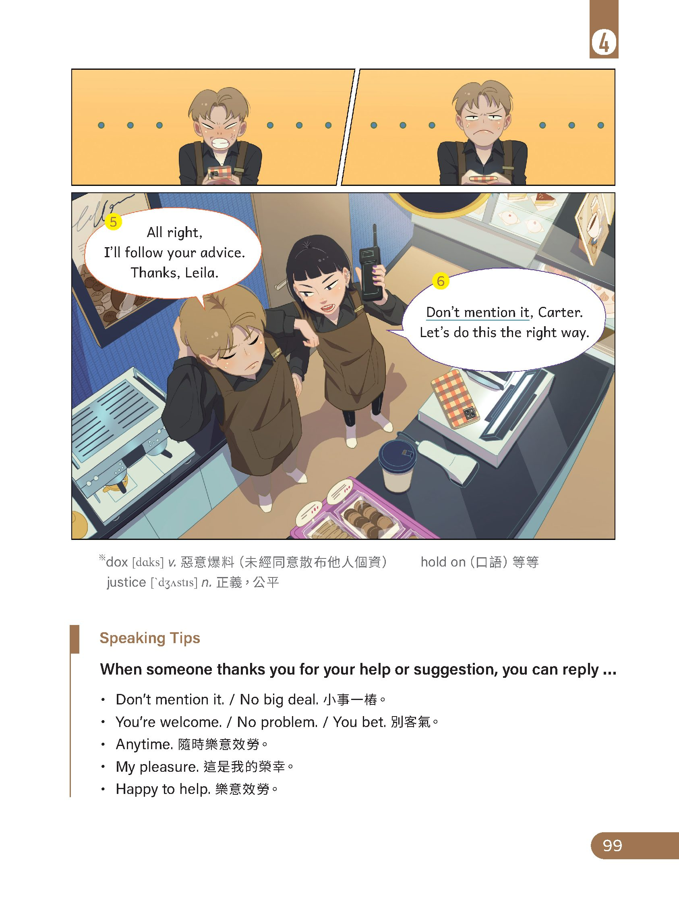

聽力關鍵策略：大綱筆記法 (Note-Taking: Outline Method)
When listening to a longer story, take notes by identifying the main topic, subtopics, and key points in short phrases.
面對長篇聽力，列出大綱能幫助集中注意力並減少資訊缺漏。將主題（Main Topic）、次主題（Subtopics）及關鍵訊息（Key Points）以簡短片語列點記錄，掌握情節演進。

聽力原文："One day, the country mouse invited his friend over for dinner." 說明第一頓晚餐是在鄉下老鼠的家中。
聽力原文：城市老鼠批評說："Your food and house are terrible." 因此填入 terrible。
聽力原文："Thus, the country mouse went to visit his friend." 鄉下老鼠前往城市拜訪朋友，在城市享用第二頓晚餐。
聽力原文："It was a delicious dinner in a wonderful house." 城市裡的晚餐美味、房子絕佳。
聽力原文："However, just as they began to eat, they heard a cat coming. They had to run and hide behind the wall."
聽力原文："I prefer living in a poor place without fear. So, he said goodbye to his friend and returned to his small, safe home."
📖 聽力完整錄音稿與中文對照 (Full Transcript)
交卷後解鎖檢視Once upon a time, two mice were friends. One lived in the country, and the other lived in the city. One day, the country mouse invited his friend over for dinner. After dinner, the city mouse said, "Your food and house are terrible. Come to the city, and I'll show you my beautiful house and give you some great food."
從前，有兩隻老鼠是好朋友。一隻住在鄉村裡，另一隻住在城市裡。有一天，鄉下老鼠邀請牠的朋友來家裡吃晚餐。晚餐後，城市老鼠說：「你的食物和房子都太差了。來城市裡吧，我帶你看我漂亮的房子，並招待你美食。」
Thus, the country mouse went to visit his friend. It was a delicious dinner in a wonderful house. However, just as they began to eat, they heard a cat coming. They had to run and hide behind the wall.
於是，鄉下老鼠去拜訪牠的朋友。那是在漂亮的房子裡的一頓美味晚餐。然而，正當牠們要開動時，聽到一隻貓接近的聲音。牠們只得跑到牆後躲起來。
After the cat left, the country mouse said, "I prefer living in a poor place without fear." So, he said goodbye to his friend and returned to his small, safe home.
貓走後，鄉下老鼠說：「我寧願住在不用擔心受怕的簡陋之地。」於是，牠向朋友道別，回到了他那安全的小窩。
🌟 核心單字與關鍵片語 (Key Vocabulary & Phrases)
- country [ˈkʌntri] (n.) 鄉村、鄉下 vs. city [ˈsɪti] (n.) 城市
- terrible [ˈterəbl] (adj.) 糟糕的、極差的 vs. wonderful [ˈwʌndərfl] (adj.) 絕佳的、極好的
- invite ... over for dinner (phr.) 邀請……來家裡吃晚餐
- prefer living ... without fear (phr.) 寧願生活在……而沒有恐懼
口說會話策略：請求幫忙與禮貌回應 (Asking for a Favor & Replying)
Alison is asking Dean for a favor. Listen to how they accept or refuse requests politely.
Alison 正想請 Dean 幫個忙。仔細聆聽音檔中如何客氣提出請求、欣然接受幫忙（Accepting）以及婉轉委婉地拒絕（Refusing）。


會話原文：Alison 說 "Hey, Dean, could I borrow your notes from today's English class?"
會話原文：Dean 說 "Of course. Just be sure to return them tomorrow."
會話原文：Dean 說 "Uh... I'm afraid not. It's a special model, and I never lend it to anyone."
會話原文：Alison 展現了極佳的風度，回答 "No worries, I understand. Thanks for the notes anyway."
Kyle: Hmm ... I’m not sure how to answer it. Sorry.
Lynn: ________________ Thanks for trying anyway.
Kyle: Sure. Good luck with it.
Kyle 表示抱歉無法解答數學題，Lynn 回應「沒關係，還是謝謝你嘗試幫忙」，故選 (D) No worries。
Jean: ________________ Let me see. The one in your right hand goes with your hair color.
Kate: That’s a good point. Thank you!
Jean 接著仔細幫忙挑選項鍊（"Let me see..."），表示欣然答應請求，故選 (C) Sure thing。
📖 會話逐句中英對照與口說小秘訣 (Dialogue & Speaking Tips)
交卷後解鎖檢視🗣️ Speaking Tips: 請求幫忙與應答 (Asking a favor & replying)
- Accepting (接受請求)：Of course. / Sure (thing). / Certainly. / By all means. / No problem. / I'd be happy to.
- Refusing (委婉拒絕)：I'm afraid not. / I'm sorry I can't. / I'd love to help, but ...
- I owe you one. (我欠你一次人情，獲得他人幫助時表示感謝)
- No worries. (沒關係、別客氣，用於回應道謝或道歉)
聽力關鍵策略：心智圖筆記法 (Note-Taking: Mapping Method)
A mind map visualizes information by branching out from a central topic into subtopics and key points.
心智圖沒有固定方向，先找出中心主題（Main Topic: School bullying），再延伸出次主題（What is it? / What to do?），最後捕捉關鍵細節與專線數字。
🎧 單字預覽 (Word Preview) — 聆聽前先熟悉重要詞彙

聽力原文："Bullying can be physical attacks, verbal insults, or rumor spreading."
聽力原文："First, talk to your teachers and parents, who can help you get out of the situation."
聽力原文："First, talk to your teachers and parents..."
聽力原文："Second, report your problem to the school."
聽力原文："Also, you can call the 24-hour hotline, 1953, of the Ministry of Education for help. Remember, you are not alone."
📖 聽力完整播客錄音稿與中文對照 (Podcast Transcript)
交卷後解鎖檢視Hi, I'm Emma. Today we are talking about school bullying. Bullying can be physical attacks, verbal insults, or rumor spreading. If you find yourself being bullied, here are a few things you can do.
嗨，我是 Emma。今天我們要來聊聊校園霸凌。霸凌的形式包含了肢體攻擊、言語辱罵，或是散播謠言。如果你發現自己遭到霸凌，這裡有幾件你可以做的事。
First, talk to your teachers and parents, who can help you get out of the situation. Second, report your problem to the school. Also, you can call the 24-hour hotline, 1953, of the Ministry of Education for help. Remember, you are not alone.
首先，告訴你的老師和父母，他們能協助你脫離困境。第二，向學校通報你的問題。此外，你也可以撥打教育部 24 小時求助專線 1953 尋求協助。要記住，你並不孤單。
🌟 核心單字與關鍵片語 (Key Vocabulary & Phrases)
- school bullying (n.) 校園霸凌
- physical attacks (n.) 肢體攻擊 vs. verbal insults (n.) 言語辱罵
- rumor spreading (n.) 散播謠言
- get out of the situation (phr.) 脫離困境
- report ... to ... (phr.) 向……通報／回報
- 24-hour hotline 1953 (n.) 教育部反霸凌 24 小時專線
口說會話策略：回應他人感謝與明智建議 (Responding to Thanks & Giving Advice)
Carter and Leila met a rude customer. Listen to Leila's wise advice and how they respond to gratitude.
Carter 和 Leila 在咖啡店遇到奧客。Carter 衝動想將影片 PO 上網肉搜，Leila 理性勸導避免觸法。仔細聆聽面對感謝時的實用道謝回應（Speaking Tips）。


會話開頭 Carter 氣憤地說："That guy was so rude to us!"
會話原文：Carter 說 "Luckily, I caught everything on camera. I'll post the video online and dox him."
會話原文：Leila 勸說 "Hold on, Carter. That's not a wise move... doxxing this guy could get you into trouble, too. Let the manager handle things like this."
會話原文：Leila 溫和且堅定地說 "Don't mention it, Carter. Let's do this the right way."
Jeremy: Sure. Here you go.
Selena: Thank you.
Jeremy: ________________
面對對方的感謝（Thank you），回答「別客氣、不客氣」最得體的片語是 (C) Don't mention it。
Emily: ________________
Tom: Why not?
Emily: Your mom will hit the roof.
Tom 想翹課去逛新購物中心，Emily 警告媽媽會暴怒（hit the roof），因此 Emily 的第一句話是規勸這不是明智之舉，故選 (A)。
📖 會話逐句中英對照與口說小秘訣 (Dialogue & Speaking Tips)
交卷後解鎖檢視🗣️ Speaking Tips: 回應他人道謝 (When someone thanks you)
- Don't mention it. / No big deal. (小事一樁、別放在心上)
- You're welcome. / No problem. / You bet. (不客氣、沒問題)
- Anytime. (隨時樂意效勞) ｜ My pleasure. (這是我個人的榮幸) ｜ Happy to help. (很樂意幫忙)
- 法律觀念提醒：dox (肉搜個資) 在我國可能觸犯《個人資料保護法》及《刑法》誹謗或公然侮辱罪，切勿因一時氣憤惹禍上身！